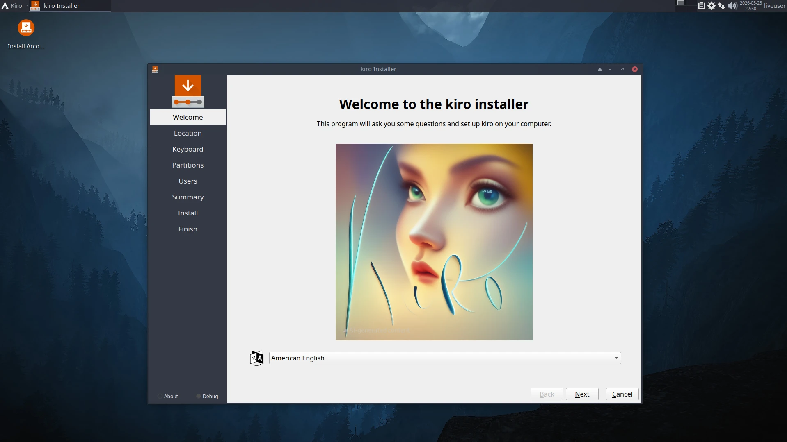
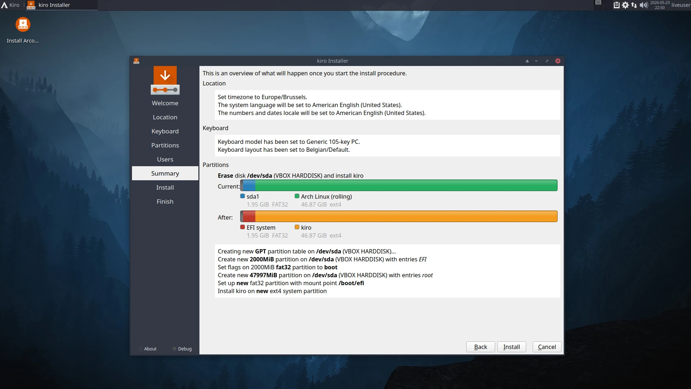
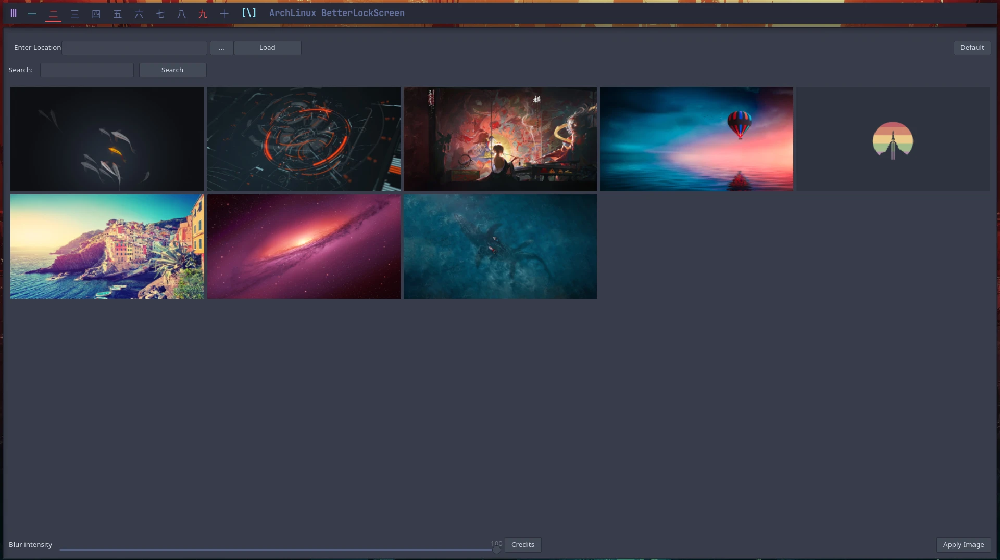
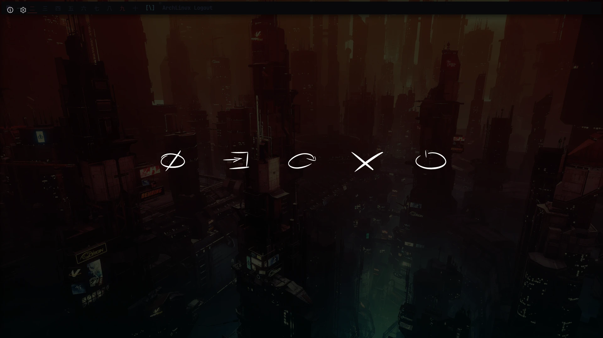

The kiro_repo
behind the Kiro ISO.
The package repository that feeds the Kiro ISO at build and install time —
the Calamares installer
and Kiro's own Calamares configuration, each on a stable and a next channel.
It's installer-only by design: not enabled on your system after install, but you can opt in on any
Arch box by adding it to /etc/pacman.conf.
Unsigned by design · SigLevel = Never · hosted on GitHub Pages
Add the repo
Opt in on any Arch system
kiro_repo is installer-only by default — it isn't in your /etc/pacman.conf
after a normal Kiro install. If you want it on a running system, append it and refresh.
The files live at
github.com/kirodubes/kiro_repo.
1. Append to /etc/pacman.conf
# /etc/pacman.conf — append at the bottom
[kiro_repo]
SigLevel = Never
Server = https://kirodubes.github.io/$repo/$arch2. Refresh pacman
$ sudo pacman -SyyuSigLevel = Never) by design. You're trusting the
GitHub pipeline that builds these packages. If that trade-off doesn't suit you, don't add it.
Packages
What's inside
A focused set: the Calamares installer plus Kiro's Calamares configuration, each shipped on two
channels — the stable build the live ISO uses, and a next build for
testing the upcoming release.
calamares
The GUI installer (from calamares.io) that drives the Kiro ISO's graphical install. The stable build burned into the live medium.
calamares-next
The testing build of Calamares, used to validate installer changes before they reach the stable channel.
kiro-calamares-config
Kiro's Calamares branding, modules, slideshow and install scripts — what turns stock Calamares into the Kiro installer.
kiro-calamares-config-next
The testing build of the Kiro Calamares config, paired with calamares-next for the upcoming release.
Screenshots
What Kiro looks like
A glance at the desktops and tools the Kiro installer lands you in.






Watch
Build your own ISO with Kiro
A walkthrough of building a Kiro-based Arch ISO — where kiro_repo fits in.